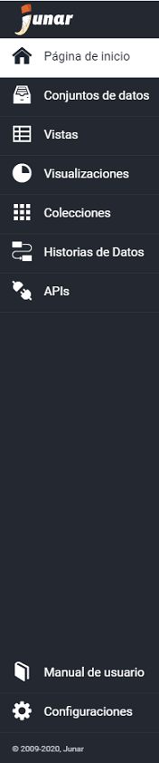

3. Secciones de la Plataforma¶
Página de Inicio: La sección contiene un listado de las actividades recientes de la cuenta, la fecha y hora de la última modificación de los recursos creados.
Conjuntos de Datos: La sección contiene un listado de los Conjuntos de Datos creados, donde se detalla su Título, Categoría y Fecha última de versión publicada, Fecha de Modificación, Autor y Estado. Contiene una serie de filtros que permite buscar con mayor rapidez los Conjuntos de Datos por Categoría, Autor y/o Estado. Desde aquí se pueden editar, borrar y descargar los Conjuntos de Datos. También se pueden crear nuevos Conjuntos de Datos desde distintas fuentes (archivos, sitios web, servicios web y Dropbox).
Vistas: La sección contiene un listado de las Vistas creadas donde se detalla su Título, Categoría y Fecha de la última versión publicada, Fecha de Modificación, Autor y Estado. Contiene una serie de filtros que permite buscar con mayor rapidez las Vistas por Autor, Categoría y/o Estado. Desde aquí se puede crear una nueva Vista, acceder al conjunto de datos, crear visualizaciones, editar y borrar. También acceder al portal de datos abiertos.
Visualizaciones: La sección contiene un listado de las Visualizaciones creadas donde se detalla su Título, Categoría y Fecha de la última versión publicada, Fecha de Modificación, Autor y Estado. Contiene una serie de filtros que permite buscar con mayor rapidez las Visualizaciones por Autor y/o Estado. Desde aquí se puede crear una nueva Visualización y acceder al portal de datos abiertos.
Colecciones: La sección contiene un listado de Colecciones creadas donde se detalla el Título, Categoría y Fecha última versión publicada, Fecha de Modificación, Autor y Estado. Contiene una serie de filtros que permite buscar con mayor rapidez las Colecciones por Categoría, Autor y/o Estado. Desde aquí se puede crear, editar y borrar las Colecciones y acceder al portal de datos abiertos.
Historias de Datos: La sección contiene un listado de Historias de Datos creadas donde se detalla el Título, Categoría y Fecha última versión publicada, Fecha de Modificación, Autor y Estado. Contiene una serie de filtros que permite buscar con mayor rapidez las Colecciones por Categoría, Autor y/o Estado. Desde aquí se puede crear, editar y borrar nuevas Historias de Datos y acceder al portal de datos abiertos.
APIs: La sección contiene un listado de las Vistas creadas donde se detalla su Título, Categoría, Fecha de la última versión publicada, Fecha de Modificación y Autor. Contiene una serie de filtros que permite buscar con mayor rapidez las APIs por Título, Autor y/o Categoría. Desde aquí se pueden crear, editar y borrar nuevas APIs.
Configuraciones: La sección contiene Información de la cuenta, permite asignar roles y crear nuevos usuarios, manejar la apariencia del sitio de datos, configurar el dominio, permite crear, editar y borrar categoría de los recursos y diseñar la página de inicio.